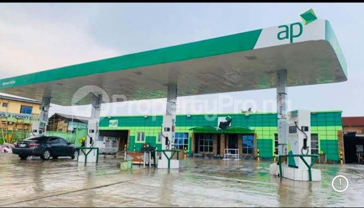
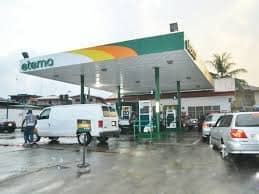
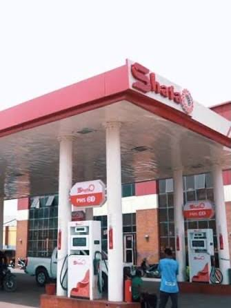
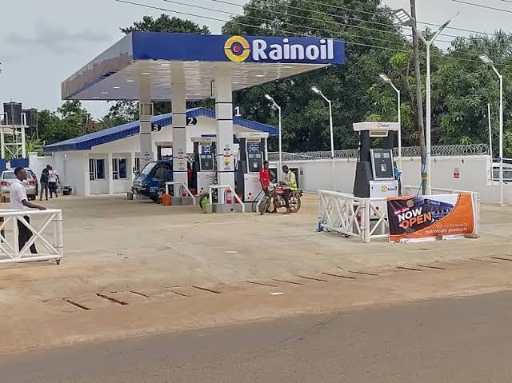
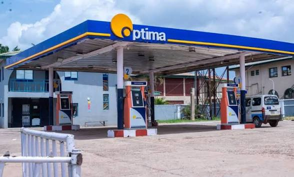
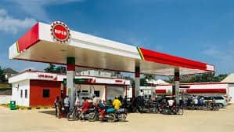
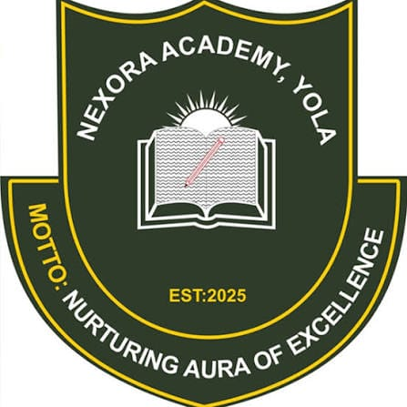

Fresh Air Mass Transit Bus Stops.
Inter-town transport service with modern buses and regular routes.
Explore places, routes, services, and navigation information across Yola.
Search anywhere, explore nearby categories, and get step-by-step directions.
Type-ahead suggestions for addresses, businesses and landmarks anywhere on the map.
Drive, walk, cycle or ride transit with distance, duration and full step list.
One tap to reveal restaurants, fuel stations, pharmacies, hospitals and more.
Ratings, opening status, phone and website for the place you selected.
If a place is missing, closed or listed incorrectly, let us know and we'll update it.
Inter-town transport service with modern buses and regular routes.

Popular local transportation option for short distances within Yola.

State-owned transport terminal providing inter-city/state bus services.

Major transportation hub in Jimeta area serving multiple routes.

Strategic transport terminal connecting Yola with surrounding regions.

An international airport with many airlines offering trips to any destinations.
Flight booking and travel services connecting Yola travelers with scheduled domestic routes.
Nigerian airline offering ticket booking and scheduled passenger flights for travelers in Yola.
Regional airline service for arranging passenger travel and flight reservations from Yola.
Travel agency providing flight reservations, tour planning, and passenger travel assistance.
Airline booking service for passengers seeking scheduled flights and travel support from Yola.
Passenger airline offering flight reservations and domestic travel services for Yola residents.

Fuel station providing petrol and other vehicle refuelling services for motorists in Yola.

MRS service station supplying fuel and basic forecourt services to drivers in Yola.
Total service station offering vehicle refuelling and convenient roadside fuel services.

AP Oil and Gas station providing petrol and everyday refuelling services for local motorists.

Eterna service station offering fuel supplies for private, commercial, and public transport vehicles.

Local AYM Shafaa station supplying fuel to motorists around Wuro-Hausa and Yola Town.

A A Ranoil station providing petrol and vehicle refuelling services in Yola.

Optima filling station serving drivers with fuel and routine forecourt services.

NIPCO service station providing fuel for cars, motorcycles, buses, and other vehicles.

Beautiful urban park featuring botanical gardens, event spaces, walking trails, and recreational facilities for families and visitors in Yola.

Beautiful recreational park in Yola featuring green spaces, walking trails, wildlife observation areas, and children's play facilities for family recreation.


Garden and event venue offering an outdoor setting for gatherings, celebrations, and recreation.

Recreational park and leisure venue for dining, social gatherings, and relaxed outdoor visits.

Resort and leisure destination offering a place to relax, socialize, and enjoy recreational activities.

Large commercial center offering a wide range of goods and services.


Modern shopping mall in Yola offering diverse retail stores, textile shops, household items, and quality merchandise for shoppers.

Leading shopping plaza in Yola featuring electronics retailers, household items, appliances, and diverse commercial services in a modern setting.


Premier shopping destination in Yola featuring diverse retail stores, restaurants, entertainment venues, and quality commercial services.

Jumia retail pickup location in Yola offering online shopping delivery, special seasonal discounts, electronics, and merchandise with competitive pricing.

Textile and clothing retailer supplying fabrics, garments, and related household merchandise in Yola.

Local shopping plaza serving nearby residents with access to everyday goods and commercial services.


Premium hotel in Yola offering luxury accommodations, conference facilities, business centers, and restaurant services for corporate and leisure guests.

Family-friendly hotel in Yola featuring comfortable rooms, excellent service, central location, and amenities suitable for families and business travelers.

Academic-oriented hotel providing convenient accommodation for visitors and professionals in Yola.

Upscale luxury hotel in Yola offering premium comfortable accommodations, modern amenities, restaurant services, and meeting facilities for distinguished guests.

Contemporary hotel in Yola featuring comfortable rooms, panoramic city views, restaurant services, and facilities for business and leisure travelers.

Locally-owned hotel in Yola known for warm, welcoming hospitality, traditional ambiance, authentic local cuisine, and personalized guest service.

Upscale hotel in Yola featuring elegant rooms, premium guest services, fine dining, and facilities suitable for discerning travelers and corporate guests.

Business-friendly hotel in Yola offering comfortable accommodations, conference facilities, meeting rooms, and services tailored for corporate travelers.

Elegant fine dining restaurant in Yola serving international and fusion cuisine in sophisticated atmosphere. Professional service and premium beverages available.

Modern casual dining restaurant in Yola offering diverse menu selections, international dishes, and comfortable atmosphere for families and friends.

Cozy and welcoming cafe in Yola serving premium coffee, espresso drinks, fresh pastries, light meals, and homemade desserts in a relaxed atmosphere.

Popular fast-food restaurant in Yola specializing in fried chicken, grilled chicken dishes, chicken sandwiches, sides, and quick meal packages.

High-end dining venue in Yola offering premium cuisine, exclusive atmosphere, fine wines, and sophisticated service for discerning diners.

Local bakery in Yola renowned for fresh-baked bread, assorted pastries, custom cakes for special occasions, and quality baked goods with traditional recipes.

Popular restaurant in Yola known for authentic shawarma, expert grilling, marinated meats, grilled platters, and Middle Eastern cuisine specialties.

Famous local spot for traditional Nigerian grilled meat (suya).

Specialty dessert shop offering various ice cream flavors and treats.

A very large and historic mosque of the Lamido palace.

Historic mosque with distinctive architecture and cultural significance.

Islamic educational and worship center serving the local Muslim community.

Islamic worship and community center serving residents in the Dodore area of Yola.

Local mosque providing daily prayers and community gatherings.

Major mosque serving the university community with regular prayer services.

Community mosque known for its welcoming atmosphere and regular services.

Local mosque providing daily prayers and a place for community worship in Jimeta.

Community masjid supporting daily worship and religious gatherings for residents of Yola.


Historic Lutheran church serving as a major Christian worship center.

Church of the Brethren congregation offering regular worship services.
Leading retail bank offering digital and traditional banking services.
Commercial bank providing comprehensive financial services and solutions.
Commercial bank branch providing personal, business, and everyday banking services in Yola.
Bank branch offering account services, payments, transfers, and other financial support in Yola.
Islamic finance-focused bank branch providing personal and business banking services in Yola.
Non-interest banking branch offering Sharia-compliant financial products and customer services.
Full-service bank branch supporting deposits, transfers, payments, and personal or business accounts.
Retail and commercial banking branch serving customers with accounts, transfers, and payment services.
Established banking branch offering everyday financial services to individuals and businesses in Yola.
Commercial bank branch providing accounts, electronic payments, transfers, and other financial services.
Regional banking branch offering personal, business, digital banking, and payment services in Yola.
Financial services branch supporting savings, payments, transfers, and banking needs for Yola customers.
International bank providing diverse financial services and investment options.
Mortgage finance institution supporting home ownership, housing finance, and related services in Yola.
Microfinance bank serving individuals and small businesses with accessible accounts and financial services.
Agent outlet supporting electronic transfers, bill payments, cash services, and mobile wallet transactions.
Agent office providing point-of-sale payments, transfers, withdrawals, and other everyday cash services.
Mobile payment agent supporting wallet transactions, bill payments, transfers, and cash-in or cash-out services.
Central banking office responsible for monetary and banking oversight activities in Adamawa State.
Development finance branch supporting businesses, industrial projects, and enterprise funding in the region.
Agricultural development bank branch supporting farmers, agribusinesses, and rural enterprise financing.

Federal university offering comprehensive programs in science, technology, and humanities. Features modern research facilities.

A state-owned university offering various undergraduate and postgraduate programs. Located in Mubi, with modern facilities and diverse academic departments.

Premier private university providing American-style education. Known for its state-of-the-art facilities and international standards.

Library providing books, study space, and educational resources for learners and residents in Yola.

Leading institution for teacher training and educational development.


Leading institution providing comprehensive education in health sciences, medical technology, and allied professions in Yola.

Specialized institution for nursing education and healthcare training.

Professional institution dedicated to legal education and training for aspiring legal practitioners in Yola.

Established secondary school in Yola offering academic education and student development across science and arts subjects.

Modern secondary school offering international curriculum and quality education.

International academy providing structured classroom learning, modern subjects, and personal development for students.

Historic government secondary school known for academic excellence and comprehensive education in science and arts.

Public technical college providing hands-on training in various technical and vocational skills to prepare students for technical careers.

College offering secondary education with a focus on academic achievement, discipline, and student growth.

Public secondary school providing affordable quality education with a focus on academic excellence and character development.

Modern educational facility incorporating technology and digital learning tools to provide innovative education in Yola.

Academy supporting strong foundational learning and academic preparation for children and young people in Yola.

Modern secondary school offering international curriculum and quality education.

Specialized sports academy providing football training and education to develop young talented athletes in Yola.
Private academy offering structured basic and secondary education with an international outlook.

International academy providing classroom learning and student development across core subjects.
Memorial school offering basic and secondary education with emphasis on academic growth and character.
College providing general education and a supportive learning environment for students in Yola.
Academy offering foundational and secondary education with attention to academic and personal development.
International school providing a broad curriculum for learners in the Jimeta and Yola area.
Royal academy offering basic and secondary education in a structured learning environment.
International academy providing foundational education and secondary-level learning for Yola families.
College offering a broad academic programme for students pursuing basic and secondary education.
Comprehensive school providing academic education and structured development for children of service families and the wider community.
Model school focused on strong academic foundations, learner confidence, and character development.
Academy providing basic and secondary education with a focus on consistent classroom learning.
International academy offering organized basic and secondary education for students in Yola.

Premier islamic secondary school known for academic excellence and character development.

Private Islamic school offering integrated curriculum combining religious education with modern academic subjects.

Modern bilingual educational institution providing quality education in both English and Arabic languages with an integrated curriculum.

College providing academic and character education in a community-focused learning environment.
International academy providing structured basic and secondary education for students in Yola.

Faith-based educational institution providing quality secondary education with emphasis on academic excellence and moral values.

High school supporting academic learning, student development, and character formation in Yola.
Faith-based academy providing basic and secondary education with a Christian learning environment.
Elementary school providing foundational learning and early academic development for children in Yola.
Islamic academy combining religious instruction with foundational academic education for young learners.
Academy offering Quranic learning alongside general education in a structured school environment.
Islamic academy providing religious and academic learning for children and students in Yola.

Public library and educational resource center.

Modern knowledge hub providing access to educational resources, research materials, and digital learning facilities.

Local library offering reading space and access to books and study resources for the Yola community.

Technology-focused learning center offering digital skills training, computer education, and modern learning resources.

Educational hub offering study support, learning resources, and a space for community knowledge sharing.

Learning and innovation hub supporting digital skills, research, and practical technology education.

Well-equipped center providing comprehensive primary healthcare services.

Community health center providing essential healthcare services and preventive care.

Modern facility offering primary healthcare services and maternal care.

Primary care centre providing basic consultations, preventive care, and essential health services to Bako residents.
Community health centre offering primary treatment, health advice, and preventive services in Yolde-pate.
Primary healthcare facility serving Bakari Mbamoi residents with basic medical and preventive care.
Local primary care facility providing consultations, maternal support, and essential community health services.
Maternity facility supporting antenatal care, maternal health, and related services for women and families.
Primary healthcare centre providing basic treatment, health education, and preventive care in Karewa.

Major secondary healthcare facility with specialized departments and services.

Public hospital providing comprehensive medical care and emergency services.

Private hospital offering quality healthcare services and specialized treatments.

Specialized hospital focused on orthopedic care, bone treatments, and rehabilitation services in Yola.

Modern healthcare facility offering comprehensive medical services and specialized treatments in Yola.

Private hospital offering quality healthcare services and specialized treatments.
University teaching hospital providing advanced medical care and training.

Modern pharmacy chain offering quality medications and healthcare products.


Local pharmacy providing affordable medications and healthcare advice.

Reliable pharmacy providing a wide range of medications, healthcare products, and pharmaceutical services to the Yola community.

Local pharmacy store providing essential medications, healthcare products, and personalized customer service to the Yola community.

Community pharmacy offering quality medications, health supplies, and professional pharmaceutical care services in Yola.

Premium pharmacy and pharmaceutical service provider offering a wide range of medications, health products, and professional healthcare consultations in Yola.

Full-service pharmacy offering prescription medications, healthcare products, and expert pharmaceutical advice in Yola.

Modern pharmacy facility providing comprehensive pharmaceutical services, health products, and professional healthcare advice in Yola.

State High Court complex hosting judicial proceedings and court administration for Adamawa State.

Appellate court serving Shariah legal matters and appeals within its jurisdiction in Adamawa State.

Judicial administration body supporting the coordination and oversight of court services in Adamawa State.

University sports complex with modern facilities for various athletic activities.

Modern fitness center offering gym equipment, classes and spa services.

High-intensity training facility with specialized workout equipment.

Multi-purpose sports facility hosting various athletic events and competitions.

College football field used for sports events and student activities.

Professional polo field hosting tournaments and equestrian events.

Historic toll gate serving as a major entrance point to Yola city.

Modern elevated roadway improving traffic flow in central Jimeta.


Elevated roadway connecting Jambutu area with central Jimeta.

Infrastructure development project to improve traffic flow at busy intersection.

Major traffic circle connecting multiple main roads in Jimeta area.
No navigation services matched your search. Try rephrasing your words.